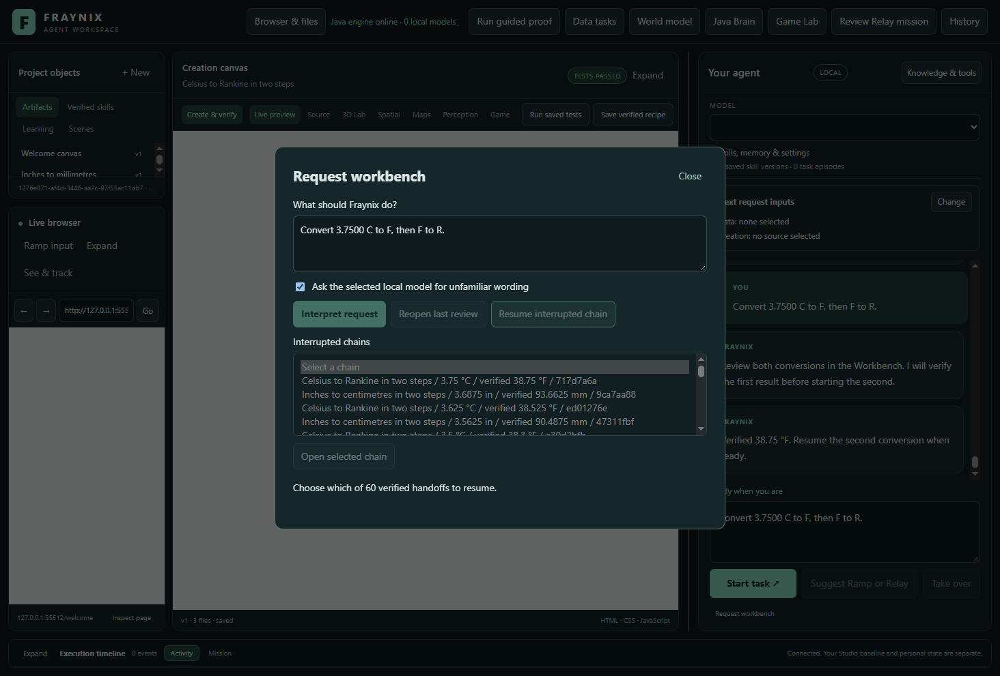
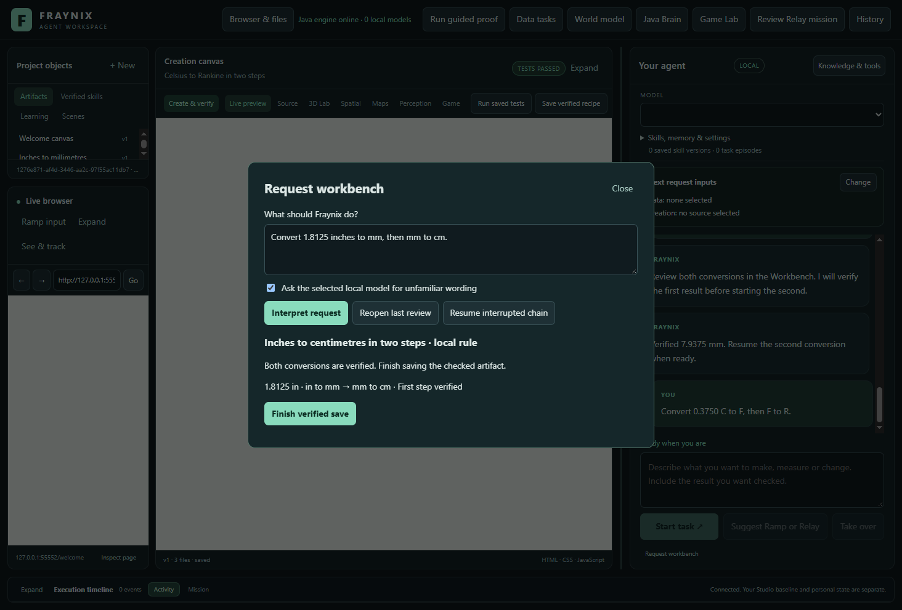
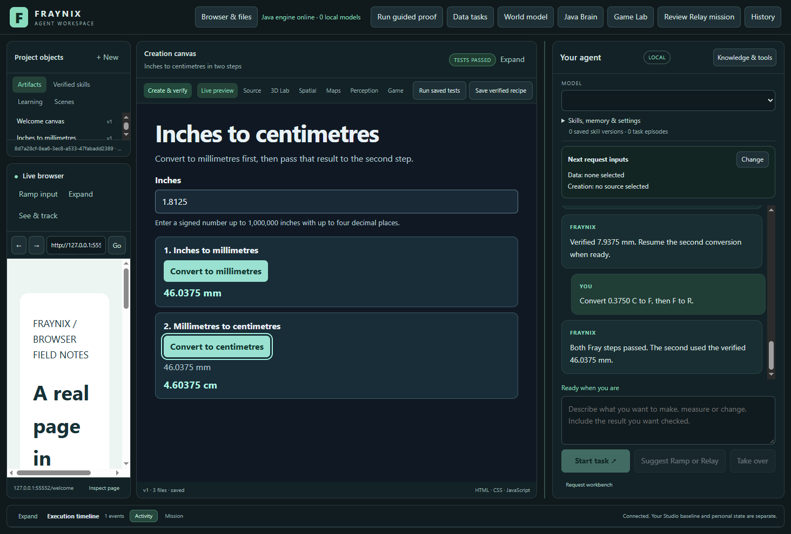

Recover an interrupted verified artifact save
Fraynix can finish saving a Fray artifact after the desktop stops during the write. Java restores the exact review and verifies both retained browser receipts before publishing the result.

The real Workbench lists 60 verified pending chains

The same review is ready to finish its interrupted artifact save

The recovered artifact opens with both stages verified
System files
Open source